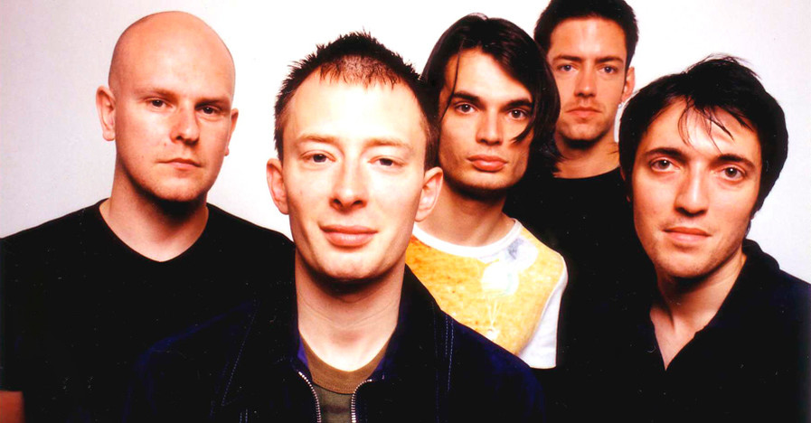
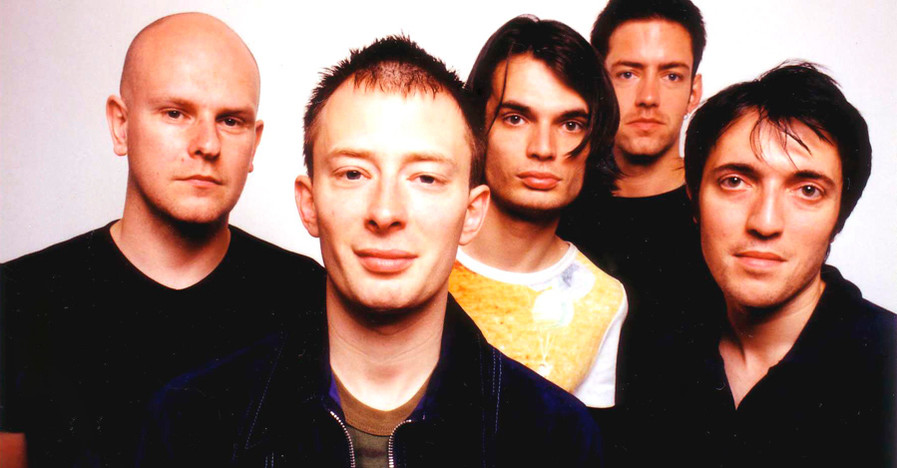

Some more about
Rock Music
The Bends (1995) took even the band’s most ardent fans by surprise. A soaring, intense mix of the approaches of Nirvana and dramatic vocalist Jeff Buckley, the album’s powerful sense of alienation completely transcended the parochial issues of mid-1990s Britpop. Driving rockers such as “Bones” were skillfully offset by forlorn ballads such as “High and Dry.” The widely acclaimed OK Computer (1997) was nothing short of a premillennial version of Pink Floyd’s classic album Dark Side of the Moon (1973): huge-sounding and chillingly beautiful, with Yorke’s weightless voice enveloped on masterpieces such as “Lucky” by webs of dark, dense textures. In its live performances, Radiohead became one of pop music’s most compelling acts.
The pressure to follow up one of the most acclaimed recordings of the 20th century told particularly on Yorke’s fragile psyche. The band made false starts in Paris and Copenhagen before settling down back in England. When Kid A came out in October 2000, it signaled that Radiohead—and Yorke above all—wanted to leave the wide-screen drama of OK Computer behind. The resulting selection of heavily electronic, more or less guitar-free pieces (notably “Kid A” and “Idioteque”) confounded many but repaid the patience of fans who stuck with it. Though the album was a commercial success, it initially met with mixed critical reaction, as would the similar Amnesiac (2001), produced during the same sessions as Kid A. But if Radiohead had seemingly disavowed its musical past on these two albums—moving away from melody and rock instrumentation to create intricately textured soundscapes—it found a way to meld this approach with its guitar-band roots on the much-anticipated album Hail to the Thief (2003), which reached number three on the U.S. album charts. In 2006 Yorke, who had reluctantly become for some the voice of his generation, collaborated with the group’s modernist producer, Nigel Godrich, on a solo album, The Eraser.

 

Rock Music
British rock group
“Where words leave off, music begins”